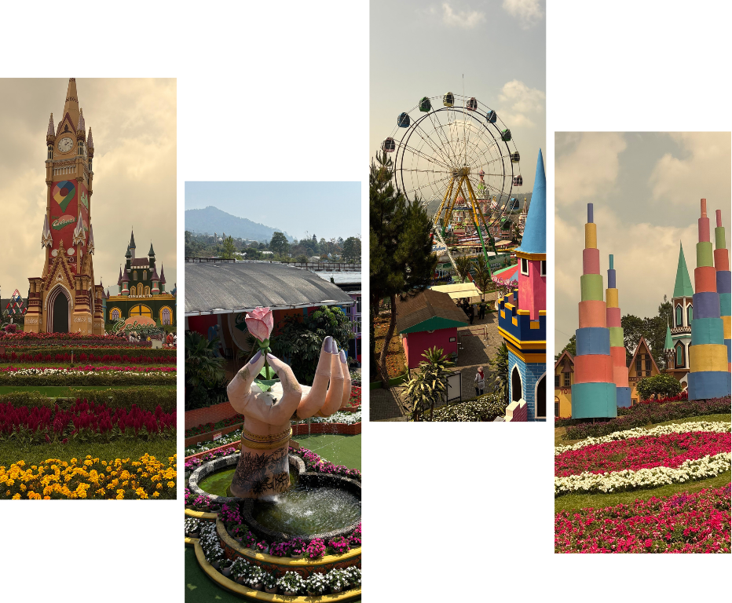
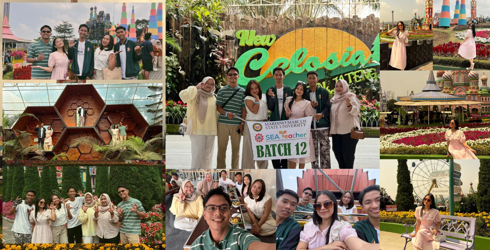

The Disneyland of Indonesia

During the second week of our stay in Indonesia, the UPGRIS International Affairs Office organized a city tour for all SEA-Teacher participants. The journey by car was enjoyable as we shared stories, took photos, and admired the beautiful scenery along the way.
As soon as I entered Celosia, I was completely amazed. The colorful flower gardens, unique attractions, and breathtaking views made the place feel magical. Truly, I can say that Celosia is the Disneyland of Indonesia. Among all the places I visited during my stay, it was one of the most beautiful places I have ever been in my life.
Together with my fellow SEA-Teacher participants, we explored different attractions, tried various rides, and captured countless photographs around the park. One of the most memorable experiences I had was riding the Rainbow Slide. Although I felt nervous at first, the excitement and laughter I experienced while sliding from the top all the way down made it one of the highlights of my Indonesia journey.
More than its beauty, Celosia became memorable because of the moments we shared together. It was a day filled with laughter, adventure, and unforgettable memories that I will always treasure.